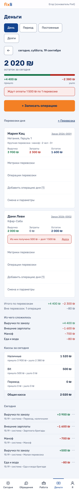
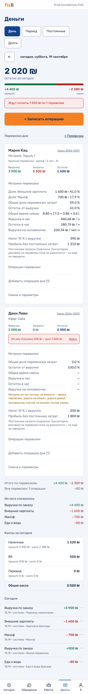
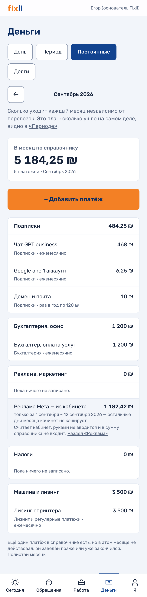
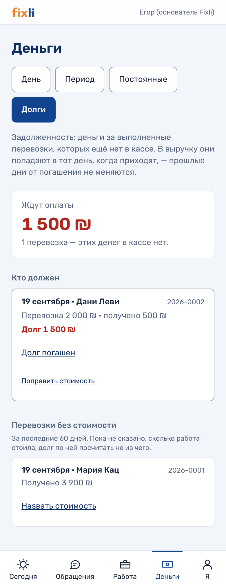

Эта страница описывала кассу на 14 сентября — девять статей, «выгрузки нет», «голосового ввода нет». После твоих правок она устарела целиком, поэтому переписана 19 сентября. Ниже то, что стоит на боевой прямо сейчас.
Твоя таблица оказалась подробнее твоих же сообщений, и делали по ней: парковка отдельной статьёй, доли еды и парковки в метриках, блок «Налоги» в постоянных затратах. В переписке этого не было.
Что нужно от тебя теперь. Внизу собраны все открытые вопросы проекта — не только по деньгам. Часть из них к Диме, часть к Егору; ты ближе к обоим, чем мы. Под каждой группой поле, написанное сохраняется само.
Что изменилось по твоим правкам
Коротко, по твоему же списку. Всё это выкачено на боевой и проверено: 3 016 тестов, 134 диверсии, ограничение базы принимает новые статьи, три новые таблицы созданы.
- Статей было девять, стало семнадцать. Убрано «Возмещение учредителю» — по словам Димы, которые ты передал. Добавлены Маноф, Бензин и Парковка отдельными строками, плюс шесть постоянных: подписки, бухгалтерия, офис, реклама, маркетинг, налоги.
- Перевозки внутри дня с подытогом по каждой и общим итогом дня.
- Все одиннадцать метрик твоей таблицы. Проверены на твоих числах: 3 900 и 2 300 при 7,5 часа и двух людях дают 41,02564103 %, 440,68 ₪ в час и прибыль 1 210 — знак в знак.
- Четыре кассы: наличные, Bit, перевод и общая.
- Автор у каждой записи и подсветка, если двое внесли одно и то же — та же сумма, статья и день.
- Постоянные затраты отдельной вкладкой, твои четыре блока. Подписки дают 474,25 ₪ в месяц — сошлось с твоей таблицей.
- Задолженность отдельным разделом: кто должен, сколько, кнопка «долг погашен».
- Выгрузка в три файла — операции, перевозки, итоги. Открываются в Таблицах, суммы считаются формулами.
- Голосовой ввод: диктуешь боту, он показывает разобранное, ты жмёшь «Записать». Одно голосовое даёт сразу несколько операций.
Семнадцать статей — полный список, по которому считает касса
Порядок такой же, как в базе: сначала приход, потом траты по перевозке, потом месячные, фонд и прочее. Группа статьи — не украшение: по ней делится шторка записи, считаются доли в метриках перевозки и собирается вкладка постоянных затрат.
- Приход: Выручка по заказу
- Переменные, по перевозке: Внешние зарплаты · Маноф · Еда и вода · Расходные материалы · Бензин · Парковка
- Постоянные, по месяцу: Машина и обслуживание · Лизинг и регулярные платежи · Подписки · Бухгалтерия · Офис · Реклама · Маркетинг · Налоги
- Отложенное: Фонд и резерв — распределение, а не выплата
- Неразобранное: Прочее — единственная статья в обе стороны, и у неё можно написать своё название платежа
Одна строка здесь — наше решение, а не чьё-то слово, и её стоит проверить: «Машина и обслуживание» отнесена к месяцу, хотя в твоей таблице её нет ни среди переменных, ни среди постоянных. Вопрос об этом ниже.
Как это работает
Раздел открывается с телефона и с компьютера. Деньги видят только владельцы: ни диспетчер, ни бригадир не получают ни строки — это не спрятанная кнопка, им просто не отдаются данные. У тебя доступ владельца есть с 18 сентября.
Записать операцию — один ввод и три касания
Ни даты, ни выпадающих списков: день берётся из открытого экрана, а расход это или поступление — из самой статьи.

Шаг 1. Сумма. Поле открывается с курсором внутри и цифровой клавиатурой. Подтверждаешь кнопкой «Дальше» или Enter. Экран сам не уезжает по первой цифре намеренно: «2» из «2500» — уже цифра, и раньше он уходил посреди набора.

Шаг 2. Статья. Статей стало семнадцать, но шторка от этого не выросла, а стала короче: сверху шесть переменных затрат перевозки, месячные свёрнуты. Кнопка статьи — это и есть выбор направления: набрать «расход» и «выручку» вместе физически нельзя.

Шаг 3. Чем платили. Наличные · Bit · Перевод · Не указывать — любая из четырёх записывает операцию. «Не указывать» здесь законный ответ: ты сам написал, что такие позиции проверяются раз в месяц по выписке.
День

Порядок сверху вниз — порядок решений: сколько осталось → записать → из чего сложилось → что именно записано. Четыре кассы стоят наверху, у каждой операции виден автор, похожие строки помечаются как возможный дубль.
Перевозки внутри дня

День делится на перевозки, у каждой свой подытог, внизу общий итог дня и отдельной строкой то, что к перевозкам не относится, — еда, бензин, лизинг. Перевозка заводится двумя полями: клиент и город. Больше не получилось: заказ без адреса погрузки в системе не заводится, и это названная цена, а не недосмотр.

Все одиннадцать метрик твоей таблицы. «В час» считается от общего времени смены, а не от времени перевозки: от 7,5 часа вместо 8,85 та же перевозка выглядела бы на пятую часть выгоднее. Если времена не внесены, строки показывают пропуск, а не ноль — ноль читался бы как «выручки не было».
Постоянные затраты

Справочник того, что уходит каждый месяц, с итогом по каждому блоку. Блоков пять, а не четыре: лизинг и обслуживание машины в твоей таблице отсутствуют, а спрятать их значило бы потерять из ответа «сколько уходит» самую крупную строку. Расход рекламы приходит из кабинета и в сумму справочника не входит.
Задолженность

Кто должен, сколько работа стоила и сколько по ней получено. «Долг погашен» записывает деньги днём получения — закрытый день при этом не меняется. Погашенные остаются серыми и вне итога: исчезнувший долг не отличить от забытого.
Период

Тот же материал вторым разрезом. По умолчанию календарный месяц — им закрываются лизинг, регулярные платежи и зарплаты. Здесь же план постоянных затрат сверяется с фактом.

Дни идут строками, а не таблицей: у таблицы в восемь колонок на телефоне обрезается последний столбец, то есть ровно то число, ради которого её открыли. Дни без записей схлопываются, чтобы живые было видно.
Три места, где сделано иначе, чем ты просил
Это те же три, что в сообщении, — здесь они с причинами, чтобы можно было возразить предметно.
1. Долг не переписывает закрытый день
Ты просил, чтобы погашенный долг попадал в выручку тем днём, когда долг появился. Абзацем выше в том же письме ты одобрил, что день не правится — «не позволяет сделать ошибку, чтобы итог поплыл». Это ровно он и поплывёт: вчерашний остаток изменится после того, как по нему приняли решение.
Развели так: деньги падают в кассу днём, когда пришли, а к перевозке привязываются отдельно. Касса прошлое не переписывает, а в карточке перевозки видно обе стороны — сколько работа стоила, сколько получено и сколько должны. Метрики при этом считаются от полной суммы, как ты и хотел: иначе перевозка с долгом показывала бы долю зарплаты вдвое выше и выглядела бы убыточной, хотя убыточной была не работа, а расчёт с клиентом.
2. Голос — через нашего бота, а не через ChatGPT
Смысл тот же: диктуешь голосовое, бот показывает, что разобрал, ты подтверждаешь. Через рабочую область ChatGPT это потребовало бы открыть запись в кассу наружу, пропускать суммы компании через OpenAI и держать платный доступ каждому исполнителю. Telegram уже у всех, расшифровка голоса у нас работает с августа, наружу не уходит ничего.
Разбор речи работает на правилах, без AI. Что не понял — спрашивает кнопками. Границы честные: «в прошлый вторник» и диапазоны дат он не понимает, иврит и английский тоже; одна сумма на два предмета («1200 на бензин и парковку») достанется первому.
3. Сводную цифру рекламы диктовать не надо
Расход Meta считается сам из рекламного кабинета и стоит в постоянных затратах отдельной строкой — в сумму справочника он не входит: складывать его с тем, что записали руками, значит посчитать рекламу дважды. Голосом остаётся то, чего в кабинете нет: наличные подрядчику, доски объявлений, Google.
Чего в кассе всё ещё нет
- Распределения постоянных затрат на одну перевозку. В твоей таблице эта строка стоит с нулём, и способов четыре — поровну на перевозки месяца, пропорционально выручке, на рабочий день или не разносить вовсе. Они дают разную прибыль одного и того же переезда, поэтому выдумывать за тебя не стали: в карточке написано «прибыль без постоянных затрат». Вопрос ниже.
- Фонда и резерва в новом виде. Пока стоит как был: у тебя 30 % и 20 % не сходятся, и до ответа мы его не трогали.
- Бухгалтерии. Реестр документов, платёжки и счета-фактуры сделаем, но после того, как учёт заработает: сначала первые настоящие записи, потом надстройки. Встречные счета для налоговой базы автоматизировать не будем — ты сам написал «возможно не прав», и это правда вопрос к бухгалтеру.
- Автоматической выручки из закрытых заказов. Задумано так: закрытый заказ предлагает поступление своей суммой, человек подтверждает. Написано ещё не было.
- Плановых показателей. Ты сам написал, что они после того, как заработает фактический учёт. Согласны.
Вопросы
Так решено потому, что ты ближе к Диме и Егору, чем мы, и половину из них закроешь быстрее. Отвечай на что можешь, остальное просто перешли кому нужно — или скажи, что вопрос не твой.
Список проверен на свежесть. Мы прошли все накопители и нашли шестнадцать вопросов, которые давно закрыты, а в файлах висели открытыми: часы работы, грузовое такси, форму бригады, разрешения на съёмку, долю зарплат в выручке. Их здесь нет — спрашивать о том, на что уже ответили, худший способ потратить чужое время.
Отвечать можно прямо здесь: напиши в поле под вопросом, внизу кнопка соберёт написанное в одно сообщение для чата.
1. Как карточка Google прошла верификацию без документа о регистрации?
Вопрос лично тебе: карточку заводил ты, она живёт с 9 сентября. Документа о регистрации у проекта нет до сих пор, и это единственный жёсткий блокер — он держит политику конфиденциальности, подвал сайта, тираж визиток и верификацию в Meta. Если у Google получилось без него, возможно, получится и дальше.
2. Четыре вопроса по учёту — тебе и Диме
- Арифметика фондов. «Не минус 30 %, а минус 20 %», и тут же — «10 % возврат учредителю и 10 % фонд убираем». Из 30 минус 10 минус 10 выходит 10. Сколько остаётся и из чего складывается?
- Постоянные затраты на одну перевозку — какой из четырёх способов твой?
- «Машина и обслуживание» — мы отнесли её к постоянным затратам месяца, но в твоей таблице этой строки нет ни среди переменных, ни среди постоянных. Ремонт и мойку вешать на конкретную перевозку или на месяц?
- Касса и банк — в твоей таблице это два разных числа, а у нас наличные, Bit и перевод это способ оплаты, а не место, где деньги лежат. Мест хранения два или одно, и нужно ли вести банк в системе?
3. Пять решений, которых ждёт Дима
- Двое подрядчиков из шести на первый круг и очередь остальных. Шестеро на нынешнем бюджете получат по 3–4 обращения в неделю каждый — ни один не наберёт объёма, на котором реклама учится, и сравнивать будет нечего.
- Бюджет каждому (не меньше 2 500 ₪ в месяц) и фикс или процент — до старта, а не после.
- Грузовик: какой из двух вариантов и когда.
- Как совместить два двигателя — его собственный вопрос от 31 августа: «грузовик будет полностью задействован на этих доставках, значит нужно брать 2? Но кто будет рулить перевозками тогда?»
- База старых клиентов — файл, таблица, телефоны в переписках или только в голове у Егора? Это самый дешёвый источник заказов: доверие уже оплачено.
4. Четыре утверждения, которые мы печатаем, а подтверждения нет
Это не придирки: каждое стоит на живых страницах или уже уехало в карточку Google. Нужно «да» или «нет» по каждому — от Егора.
- «Стрейч всегда идёт поверх одеяла, а не вместо него» — прямой цитаты нет, мы вывели из двух косвенных.
- «Свои постоянные работники, а не бригада, собранная утром» — первоисточника нет вовсе, утверждение ссылается само на себя. Уже стоит в описании карточки Google.
- «Столяр в каждой бригаде» — в каждой сегодня или это правило, к которому идёте?
- «Поставки» и «девелопмент» на бортах трёх машин — компания их оказывает? Вопрос задан 19 августа, ответа нет, а машины ездят с этими словами.
5. Девять услуг сайта: своя, через подрядчика или нет вовсе?
Одна ревизия закрывает три спора сразу. Уборку сайт продаёт как свою, а документ Егора запрещает называть её своей командой. Покраска названа действующим направлением, но цены нет ни одной — а запросы придут раньше прайса. География: документ говорит «Нетания и 25 км, по всему Израилю не обещать», ответ Димы от 10 августа — «можем поехать куда угодно»; на сайте стоит версия Димы.
Плюс по грузовому такси: тариф Егор подтвердил (400 ₪ в час, минимум полтора часа), а ограничения «только по Нетании» и «без грузчиков» — из старого ответа, и новым они не отменены и не подтверждены.
6. Шесть вопросов о практике бригады — только Егору
На них не ответит никто другой, а они держат числа в расчёте: холодильник на четыре двери (сколько человек, снимаете ли двери, сколько минут); каменная столешница (считаете отдельно или отказываетесь); телевизор 85 дюймов (нужна ли своя рама); шкаф-купе IKEA (правда ли шесть человеко-часов); внутренние габариты трёх машин — без них калькулятор молчит о том, поместится ли заказ в один рейс; парк машин — три Sprinter одного класса, «разного размера» не подтверждено, и когда придёт большой грузовик.
7. Пять обещаний в объявлениях о найме — «да» или «нет»
Тексты вакансий готовы на двух языках и не публикуются, пока не подтверждено: «первый выход уже на этой неделе»; рост до старшего смены; наставничество как ступень роста; свой инструмент как преимущество при отборе; «постоянная работа, а не разовые подработки». Плюс какой номер печатать — рабочий или отдельный.
Почему спрашиваем: в этой же папке две строки уже пришлось снимать после того, как их написали, — обещание месячного заработка и «работа круглый год».
8. Знак, визитка и карточка Google
- Кто автор знака и существует ли исходник. Наш вектор — перетрассировка картинки: на визитке годится, на метровой оклейке фургона тот же пиксель превращается в 4,6 мм. Оклеить четвёртую машину нашим файлом нельзя.
- Какая фигура человека каноническая. Их три: на борту фургона, на визитке и в самом знаке — и они разные. Вопрос стоит на тираже визиток.
- Категория карточки Google. Сейчас «Услуги транспортировки и хранения»: по запросам «переезд» и «הובלות» карточку не покажут, а «хранение» — услуга, которой нет. Ставим «Служба переездов»?
- Формат визитки — 85 × 55 или 90 × 50 мм, и кто ещё её получает кроме Егора: тираж считается на человека.
9. Люди и каналы
- Носитель иврита на вычитку — держит 121 текст: ивритскую ветку бота, титры ролика, объявления о найме, тексты страниц.
- Список групп Facebook — не «пришлите группы», а действие: Facebook → «Группы» → «Ваши группы», названия скриншотами. Группы WhatsApp — от Димы, там ссылки персональные.
- Сколько примерно обращений в неделю приходит в WhatsApp — порядок, не точность. Без этого не с чем сравнивать через месяц.
- Что в рекламном аккаунте не про перевозки — иначе средние по истории смешивают перевозки с чужим бизнесом.